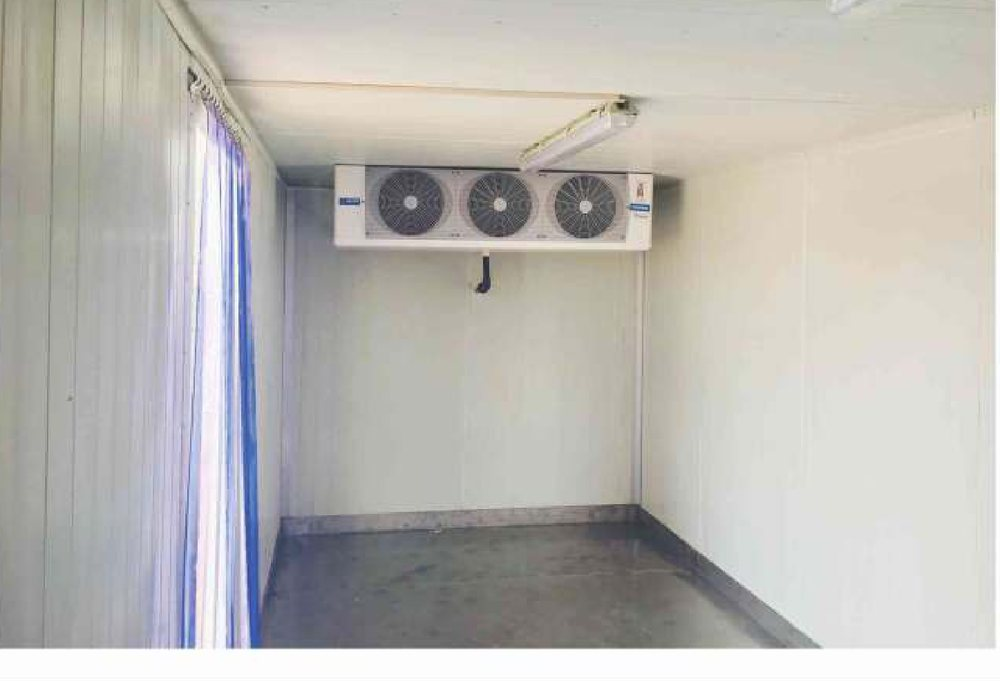

Every refrigeration catalogue in the world quotes capacity against an ambient design temperature. Almost every buyer in Pakistan reads the wrong column. The unit gets picked in an air-conditioned office off a figure that assumes it is +30 °C outside, and then it spends June parked in Multan at forty-four degrees with the sun on the roof. The machine is not faulty. It was sized for a different country.
This is the single most common way a refrigerated truck disappoints its owner, and it is entirely avoidable — the number you need is printed in the same table, one column to the right. Here is how to read it.
What the catalogue is actually telling you
Zanotti — the Italian manufacturer whose units we fit across the small-to-medium range — organises its range by how much insulated body volume a unit will hold down. Three numbers govern every row:
- Tc is the box setpoint — what you need inside the body. Chilled work is quoted at 0 °C, frozen at −20 °C.
- Ta is the ambient design temperature — what it is outside. The catalogue gives you +30 °C and +40 °C.
- m³ is the internal body volume the unit will hold at that combination. The metre figure beside each family is the body length it is built around.
Note what the table is not: it is not a promise about your route. It is an envelope, measured under steady conditions, with the doors shut. We will come back to that.
The +40 °C column is the one that matters here
Put the two ambient columns side by side and the derate is stark. These are Zanotti's own published figures for chilled duty at a 0 °C box:
| Unit family | At Ta +30 °C | At Ta +40 °C | Capacity lost |
|---|---|---|---|
| Direct Drive Split | 12–28 m³ | 9–21 m³ | ≈ 25% |
| Large Direct Drive Split | 28–54 m³ | 20–38 m³ | ≈ 30% |
| Direct Drive Monoblock | 22–50 m³ | 15–35 m³ | ≈ 30% |
| Diesel Monoblock | 34–80 m³ | 23–60 m³ | ≈ 25% |
A quarter to a third of the machine, gone, purely because of where it is parked. And +40 °C is not an extreme for Pakistan — it is an ordinary May-to-August afternoon in Multan, Sukkur, Bahawalpur and most of interior Sindh. If your route touches any of that, +40 °C is your design point, and the +30 °C column is a number for someone else's summer.
Frozen costs you again, on top
Now drop the box from chilled to frozen and the same unit gives up more ground:
| Unit family | Tc 0 °C | Tc −20 °C |
|---|---|---|
| Direct Drive Invisible | 7–16 m³ | 7–12 m³ |
| Direct Drive Split | 9–21 m³ | 8–16 m³ |
| Large Direct Drive Split | 20–38 m³ | 16–35 m³ |
| Direct Drive Monoblock | 15–35 m³ | 13–24 m³ |
The two penalties stack. A unit chosen from the +30 °C chilled figure and then asked to run frozen through a Pakistani summer is not marginally undersized — it is roughly half the machine the job needs. It will hold band on a cool morning, fall behind by noon, and never catch up, because a refrigeration system that cannot make its setpoint simply runs continuously and quietly ages itself.
A worked example: one 5-metre body, three answers
Take a common Pakistani distribution vehicle: a rigid with a 5 m body, roughly 20 m³ inside. One truck, one volume — and three different correct answers depending on band and ambient.
| Duty | Direct Drive Split covers | Verdict |
|---|---|---|
| Chilled, Ta +30 °C | 12–28 m³ | Comfortable — 20 m³ sits mid-range |
| Chilled, Ta +40 °C | 9–21 m³ | At the ceiling — no margin left |
| Frozen, Ta +40 °C | 8–16 m³ | Undersized — step up a family |
For the frozen case the answer is the Large Direct Drive Split, which covers 16–35 m³ at −20 °C and +40 °C and puts 20 m³ back in the comfortable middle of its range. Same truck. Same body. A different machine, because of two numbers that never appear on a purchase order.
That middle row is the one that catches people. On paper it fits. In practice a unit running at the absolute top of its published envelope has nothing in reserve for a hot load, a long queue at a gate, or a condenser that has not been washed since March.
What the table cannot see
Catalogue figures are steady-state, doors closed. Real routes are neither. Three loads live outside the table entirely:
- Door openings. A multi-drop retail route opens the body fifteen or twenty times a day, and every opening dumps the cold air out at floor level and pulls +40 °C air in at the top. On a heavy multi-drop run, infiltration can rival the transmission load through the panel. A PVC strip curtain at the door is the cheapest fix in the whole vehicle and it belongs on every multi-drop body.
- Pull-down. A reefer unit is sized to hold temperature, not to chill warm product. If the load goes in hot, the unit is being asked to do a job that belongs to a blast freezer or a chiller at the plant. Product should reach the vehicle already at band.
- Solar gain. A white roof in direct sun at midday is a heat source the catalogue does not model. Roof colour, body finish and where the truck parks between drops all move the number.
The problem nobody expects: heating

Pakistan is not only hot. A December night on the Motorway, or a route that climbs toward Murree, Abbottabad or Quetta, can put the outside air well below the band you are holding — and a load at +2 °C in a −5 °C night needs heat added, not removed. Fleets that never think about this discover it when produce arrives frozen and unsellable.
This is what the Thermo King T-Series heat option is for. A secondary coil built into the evaporator routes the unit's own engine coolant through the airstream, giving heating capacities up to double the conventional values:
- On the T-600R and T-800R, heating capacity on engine power is more than doubled, to 6,220 W, using the water heat kit.
- On the T-1000R, it rises by 46%, to 6,000 W, with the heat upgrade.
- Neither needs any additional refrigerant charge — so there is no environmental impact and no change to your leak-check regime.
- Electric heater bars add a further 1,900 W on units running on electric stand-by.
Read those together and the design intent is clear: the water heat kit works while the engine turns, and the heater bars cover the vehicle once it is parked and plugged in overnight. A depot that stages loaded trucks after dark needs both. Specifying only the first is common, and it fails in exactly the hours nobody is watching.
The body decides how hard the unit has to work
All of the above assumes a competent envelope. Halve the insulation and every number in every table above becomes fiction.
We build reefer bodies in the same PIR sandwich panel that goes into our cold stores, at a thermal conductivity of 0.022 W/m·K (BS EN 14509, aged) and a core density of 40–45 kg/m³. On a payload-constrained vehicle that ratio is the whole argument: PIR delivers more insulation per kilogram than PUR (0.024 W/m·K) or EPS (0.034 W/m·K), so insulation that does not earn its weight is payload you never carry. It is also fire class B1 with a B2 foam core to ASTM E84, self-extinguishing and char-forming — which matters in a sealed compartment sitting near fuel and electrical loads.
The unhelpful truth is that body and unit are one decision. A thin body forces a bigger machine, which burns more fuel for the life of the vehicle, to compensate for a saving made once at purchase.
What to send us
If you want a reefer sized properly rather than sized off a catalogue row, five things settle it:
- Body length and internal volume — or the chassis, and we will work it out.
- Target band — chilled, frozen, or split multi-temperature.
- Route — cities, and roughly how many door openings per day.
- Product and its condition at loading — at band, or warm.
- Drive preference — diesel, electric stand-by, or dual-mode.
That is enough to size the unit against the ambient you actually run in and the doors you actually open, rather than a steady-state figure from an Italian test room. The full range, both Zanotti selection tables and the Thermo King heat options are on our refrigerated vehicles page. If you are building the fixed end of the chain at the same time, the load calculator sizes the cold store the trucks will be feeding.
A cold store only earns its temperature band if the load arrives at it cold. The truck is where most cold chains actually break — and, more often than not, it breaks because somebody read the wrong column.